The purpose of this lab is to introduce you to the application OMNeT++ / INET. OMNeT++ is a discrete event simulation framework, which is primarily used for building network simulators, but can be used in other domains. OMNet++ simulations can be run and explored through graphical and command line interfaces. INET is a library for OMNeT++ which includes models for wired, wireless and mobile networks. Together, these applications can define and simulate networks and collect data to help us quantify network design decisions. These applications are open source software which are free to use for academic purposes.
Lab 3: Intro to OMNeT++ / INET and Ethernet Networks
ENSE 472 - Digital Networks - Laboratory
University of Regina - Engineering and Applied Science - Software Systems Engineering
Lab Instructor: Adam Tilson
A Windows, Mac or Linux computer with OMNeT++ / INET installed. You may either install this yourself, or instead use the provided VirtualBox image which includes these applications installed in a light-weight Ubuntu environment.
If you wish to install OmNET++ on a windows machine, you must build it from source. This may sound intimidating, but it’s actually not that bad. You can follow the installation guide, or this video for Windows.
Alternatively, you may download my VirtualBox Image which has the software installed and ready to go.
Using the Virtual Box:
The same principles for running a VirtualBox apply as you learned in ENSE 353.
Download the VirtualBox file (~4GB)
Import the Appliance:
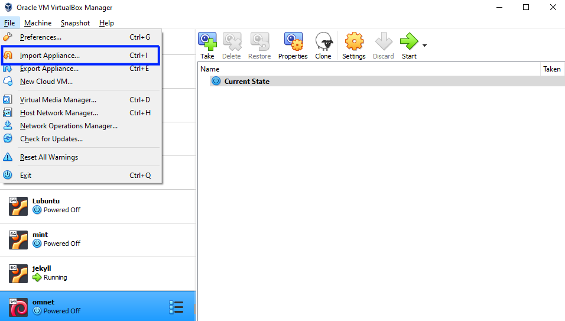
Locate the image
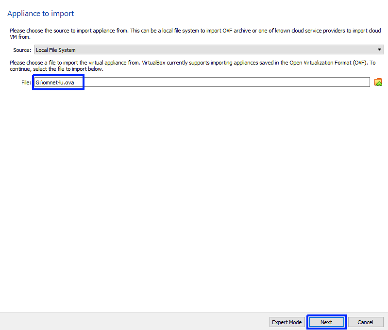
Make adjustments as needed, e.g. to the amount of RAM:
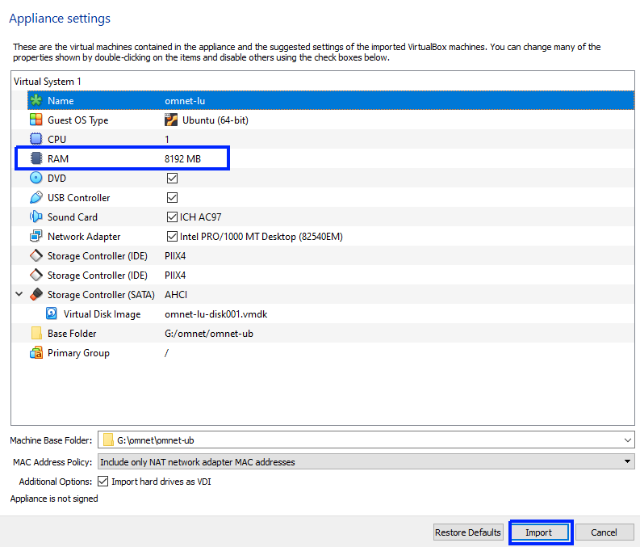
Importing will take a few minutes. The Hard Drive ma expand to about 20GB, so make sure you have room!
Boot it up!
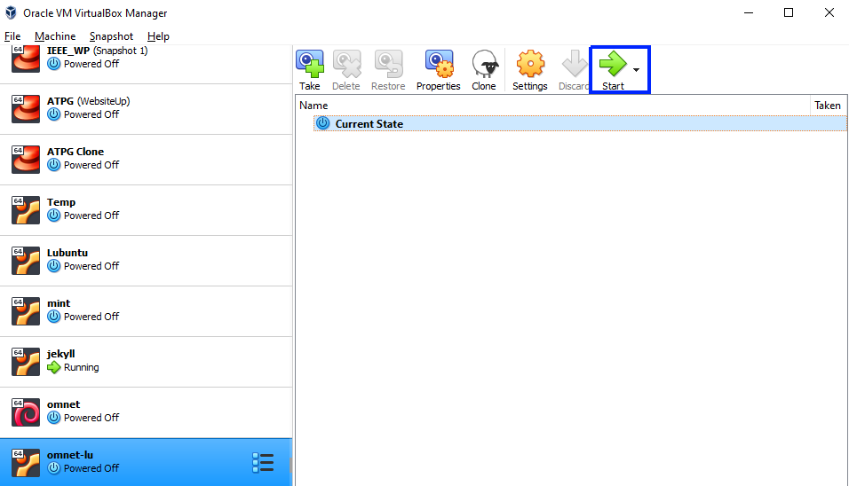
Sign in:
Username and Password: omnet / omnet
Run OMNeT++ through the desktop shortcut!
Black Screen on Boot
A few students had this as a problem in the lab. Here’s how we solved it:
Boot the virtual-box normally. If you get stuck at a black screen after boot…
- Switch into command line mode
ctrl+alt+F3 - sign in with
omnet/omnet - update with
sudo apt-get update && sudo apt-get upgrade - restart with
sudo reboot
If this works, great. You can also try reinstalling the VirtualBox Guest Additions
- Switch into command line mode
ctrl+alt+F3 - sign in with
omnet/omnet - insert the guest additions CD with
devices -> insert guest additions cd imagefrom the VirutalBox top menu - mount the CD in linus with
sudo mkdir -p /mnt/cdrom sudo mount /dev/cdrom /mnt/cdrom cd /mnt/cdrom sudo sh ./VBoxLinuxAdditions.run --nox11 - restart with
sudo reboot
If you are still having difficulties, email me and we can try to figure it out!
About the Virtual Box Image and Omnet Configuration
Image Base: Ubuntu Server + LXDE with no bloat
- You may want to install some apps!
- Guest Additions were installed.
- This enables clipboard sharing, drag and drop
- It also enables smart desktop resizing, one of my favourite features
- The OMNeT++ / INET installation guides were followed for Ubuntu
I’ve create a workspace in /home/omnet/workspace and set some defaults for you.
How do I shut down LXDE?
- Lower left application menu,
Leave->Shut Down
How do I get files in and out of the VirtualBox?
- Drag and Drop can be enables in
Devices->Drag and Drop
How do I get code in and out of the VirtualBox?
Devices -> Shared Clipboardallows copy-pasting
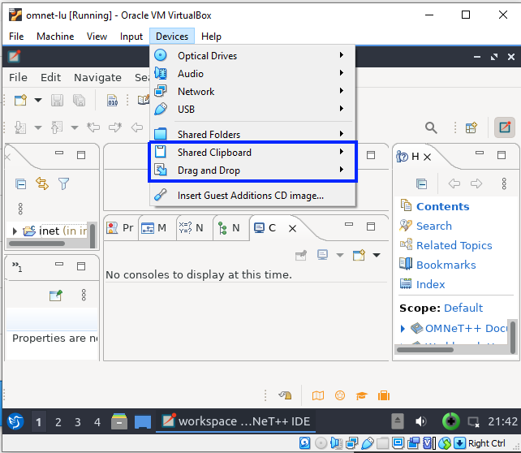
Where are important files stored?
- OMNeT++ is found in
/home/omnet/omnetpp-5.7/ - INET is found in
/home/omnet/inet - IDE deafult workspace is in
/home/omnet/workspace/
ALOHA World!
We can ensure that we have the application working by looking at the ALOHAnet sample. Lecture tie-in: What was ALOHANet?
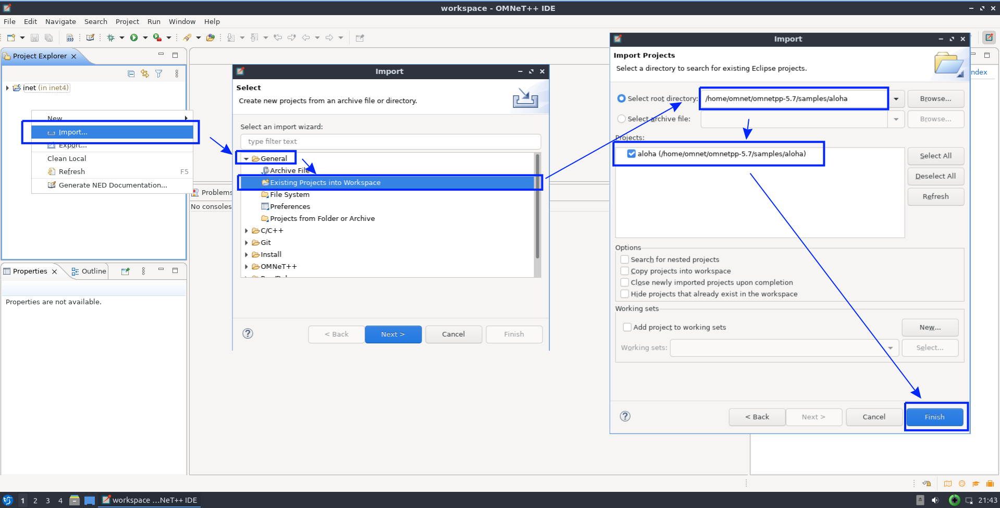
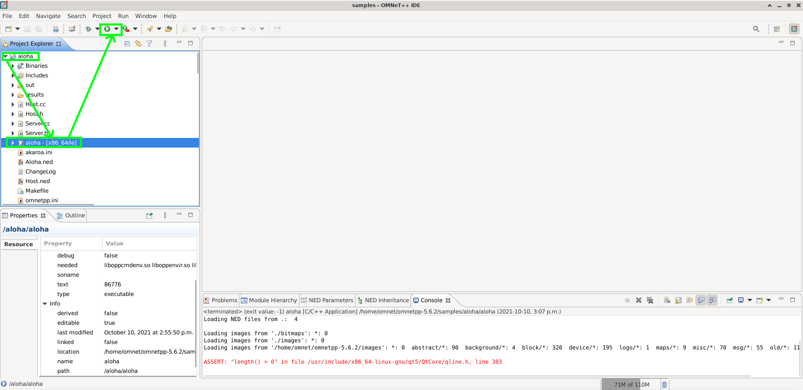
You can run as a pure C++ application, this is fine, confirm a few times. It will build and run.
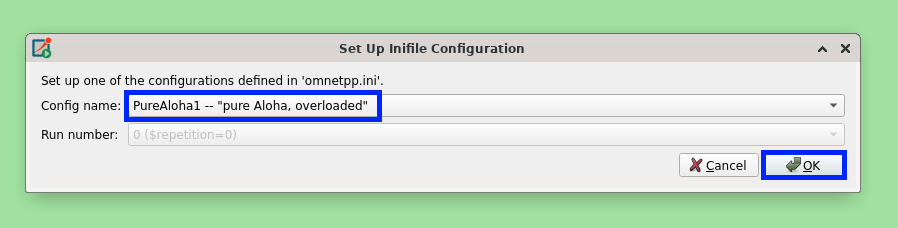
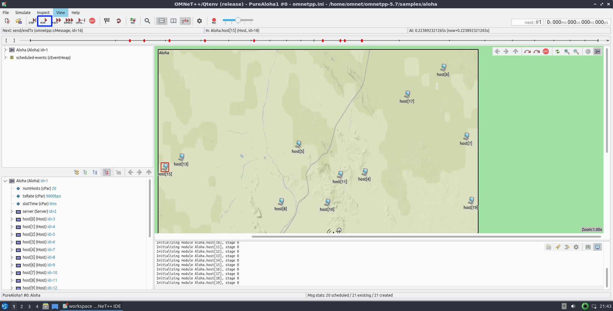
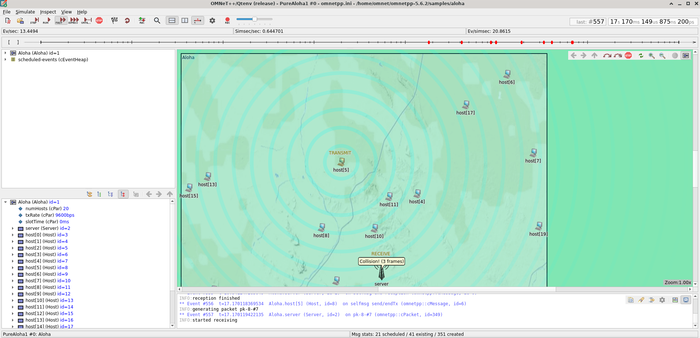
OMNeT++ is a Discrete Event simulation framework
- primarily used for building network simulators
- Can be used in other domains
- e.g. processor development
- e.g. complex software systems
OMNet++ simulations can be run and explored through graphical and command line interfaces.
An OMNeT++ network is comprised of a number of modules
- Can be written once and reused
- Messages can be exchanges between:
- Simple modules
- Compound modules which are composed of simple modules.
Simple modules are written in C++, using the simulation class library
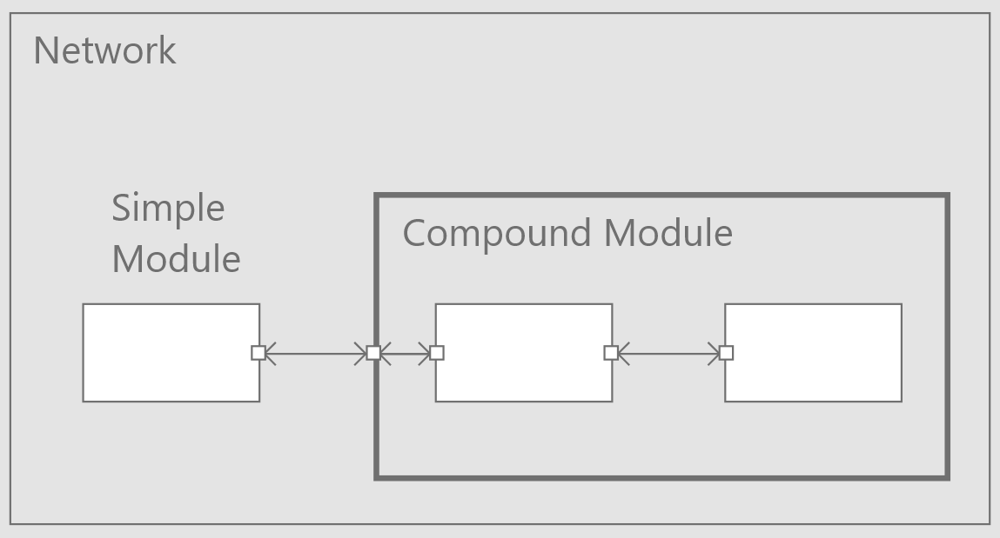
With OMNeT++ we can:
- Create hierarchical modules
- Essentially the entire system is a compound module
- Module topology specified in a
nedfile.
- Specify module gates, which are the source and destinations of messages
- Specify links, how modules are connected
- Can optionally specify parameters like data rate, propagation delay, bit error rate, packet error rate
- this creates a
channel
- Model packet transmission, either in the
.nedfile or theompnetpp.inifile - Modify parameters to change how our network operates
The NED File
Describes the networks
- Create simple modules
- Create compound modules
- Combine them into a network
- Can also specify channels
- Scalable due to hierarchical nature, component-based, interfaces and inheritance
- Java-like Packages to reduce namespace collisions
The OMNeT++ IDE
The IDE included is a skin of Eclipse, specifically created for writing OMNeT++ simulations.
- It is already configured for building and running your applications!
- Lets tour the UI
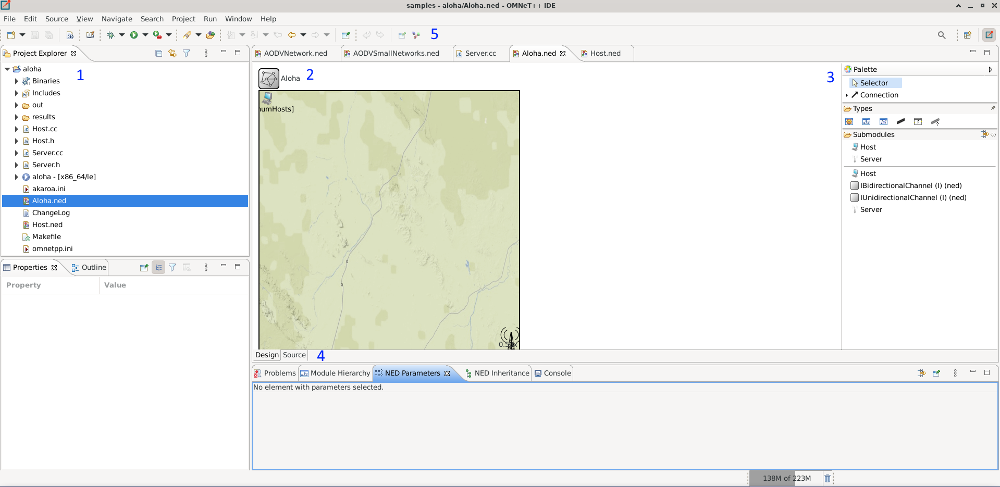
- The project workspace is here. By default OMNeT++ Loads INET and Sample Projects.
- In center stage, you can edit source and view and modify the topology
- The palette lets you add submodules to this module
- Switch between
Design and Sourcehere - The task bar allows you to run and debug applications.
Let’s look at some NED files:
Investigating Aloha
In the Aloha app, the Host.ned:
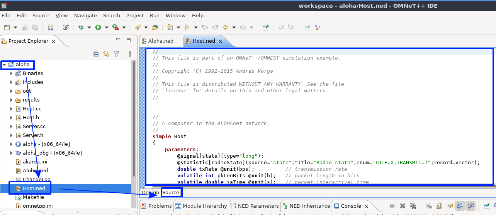
//
// A computer in the ALOHAnet network.
//
simple Host
{
parameters:
@signal[state](type="long");
@statistic[radioState](source="state";title="Radio state";enum="IDLE=0,TRANSMIT=1";record=vector);
double txRate @unit(bps); // transmission rate
volatile int pkLenBits @unit(b); // packet length in bits
volatile double iaTime @unit(s); // packet interarrival time
double slotTime @unit(s); // zero means no slots (pure Aloha)
double x @unit(m); // the x coordinate of the host
double y @unit(m); // the y coordinate of the host
double idleAnimationSpeed; // used when there is no packet being transmitted
double transmissionEdgeAnimationSpeed; // used when the propagation of a first or last bit is visible
double midTransmissionAnimationSpeed; // used during transmission
bool controlAnimationSpeed = default(true);
@display("i=device/pc_s");
}
and the Aloha network:
//
// The Aloha network consists of hosts which talk to the central "server" via
// the Aloha or Slotted Aloha protocol
//
network Aloha
{
parameters:
int numHosts; // number of hosts
double txRate @unit(bps); // transmission rate
double slotTime @unit(ms); // zero means no slots (pure Aloha)
@display("bgi=background/terrain,s;bgb=1000,1000");
submodules:
server: Server;
host[numHosts]: Host {
txRate = txRate;
slotTime = slotTime;
}
}
We can briefly glean that these models have a number of parameters set, and the submodule architecture is laid out in the Aloha network.
We can also look inside the Host.cc and Server.cc, but it’s a bit intense. Let’s start with something a little easier!
Tic-Toc Tutorial
To understand OMNeT++ usage, let’s work through the tic-toc tutorial. It walks through all the steps of setting up an example, simulating it, and collecting data.
The tic-toc application will consist of two nodes. One node will create a packet, and then the packet will get passed back and forth.
Quick setup:
Let’s add a tictoc project to our workspace:
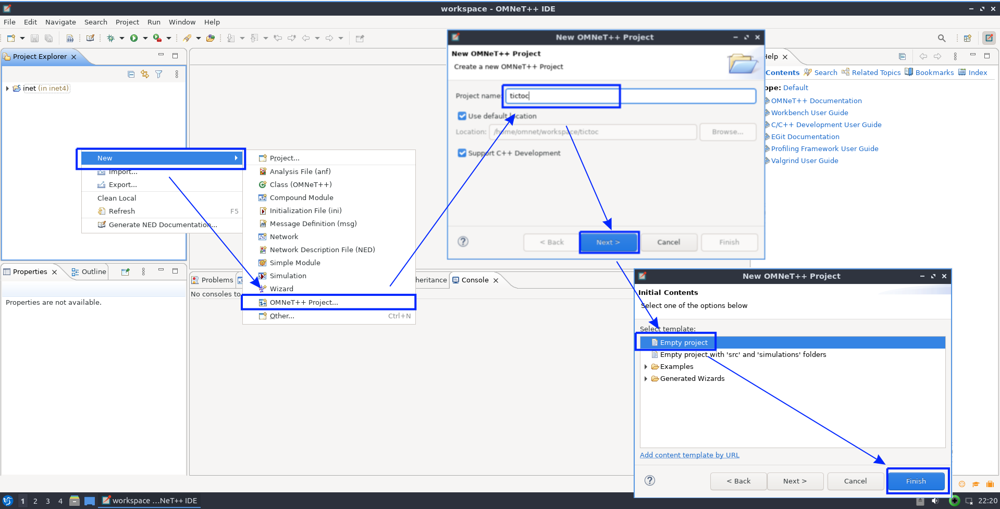
Let’s add a tictoc1.ned and txc1.cc file:
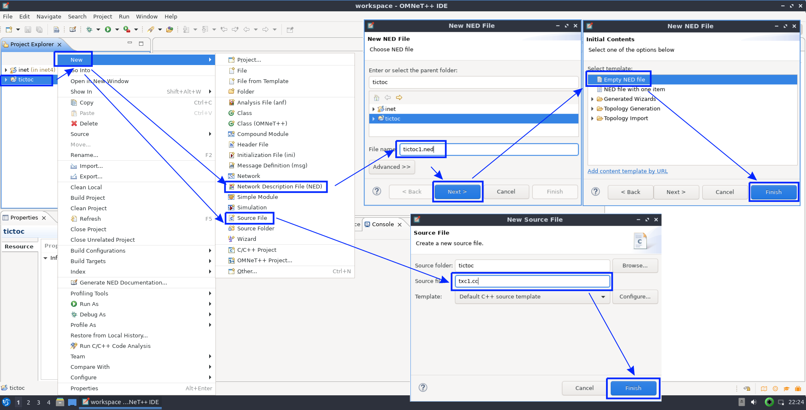
In tictoc1.ned source add the contents:
simple Txc1
{
gates:
input in;
output out;
}
//
// Two instances (tic and toc) of Txc1 connected both ways.
// Tic and toc will pass messages to one another.
//
network Tictoc1
{
@display("bgb=147,144");
submodules:
tic: Txc1 {
@display("p=32,103");
}
toc: Txc1 {
@display("p=119,30");
}
connections:
tic.out --> { delay = 100ms; } --> toc.in;
tic.in <-- { delay = 100ms; } <-- toc.out;
}
If you switch back to the design mode, you can see the configuration. You can drag elements around if you need to.
Here’s the topology for tic-toc:
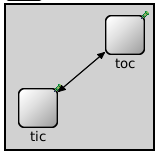
And here’s the simulation code:
Here’s the txc1.cc file:
(Note that .cc is a filename convention for c++ files, functionally equivalent to .cpp.)
#include <string.h>
#include <omnetpp.h>
using namespace omnetpp;
/**
* Derive the Txc1 class from cSimpleModule. In the Tictoc1 network,
* both the `tic' and `toc' modules are Txc1 objects, created by OMNeT++
* at the beginning of the simulation.
*/
class Txc1 : public cSimpleModule
{
protected:
// The following redefined virtual function holds the algorithm.
virtual void initialize() override;
virtual void handleMessage(cMessage *msg) override;
};
// The module class needs to be registered with OMNeT++
Define_Module(Txc1);
void Txc1::initialize()
{
// Initialize is called at the beginning of the simulation.
// To bootstrap the tic-toc-tic-toc process, one of the modules needs
// to send the first message. Let this be `tic'.
// Am I Tic or Toc?
if (strcmp("tic", getName()) == 0) {
// create and send first message on gate "out". "tictocMsg" is an
// arbitrary string which will be the name of the message object.
cMessage *msg = new cMessage("tictocMsg");
send(msg, "out");
}
}
void Txc1::handleMessage(cMessage *msg)
{
// The handleMessage() method is called whenever a message arrives
// at the module. Here, we just send it to the other module, through
// gate `out'. Because both `tic' and `toc' does the same, the message
// will bounce between the two.
send(msg, "out"); // send out the message
}
Next, we need to include an omnetpp.ini
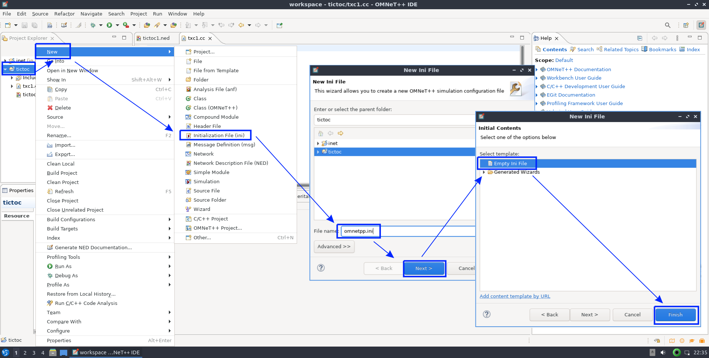
Include the following:
[General]
network = Tictoc1
Now we need to build and run it:
Important - always select NO when it says switch to Release config. The reason for this is that I’ve only compiled the debug libraries in the VirtualBox. If you start building the release libraries, expect it to take over an hour.
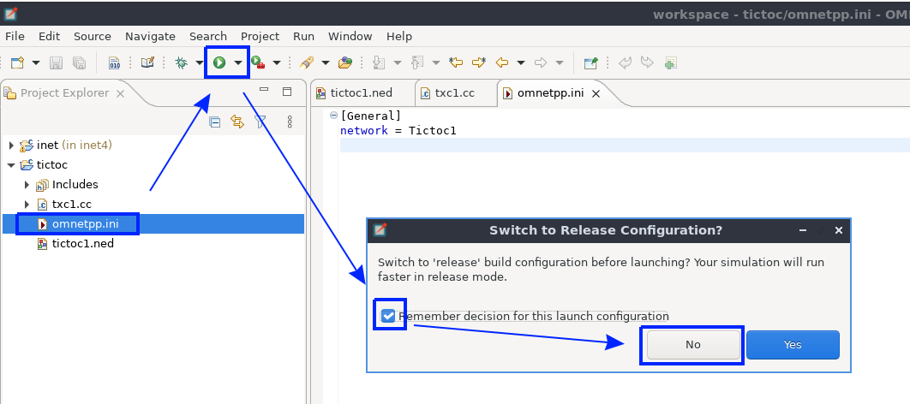
Run with the run controls near the top. You will see the two nodes sending messages back and forth, with the events being logged in the lower left.
The run controls briefly are:
- Step through simulation (F4)
- Run with graphics (F5)
- Run without graphics (F6, faster)
- Run without graphics on console logging (F7, maximum speed for your hardware)
- Stop (F8)
If you wish to record an event log, you can add this line to the omnetpp.ini:
[General]
network = Tictoc1
record-eventlog = true
This will create a file in your workspace in tictoc/results/Tictoc1-#0.elog
If you open this file, you can see the results on the simulation graphically in a sequence chart:
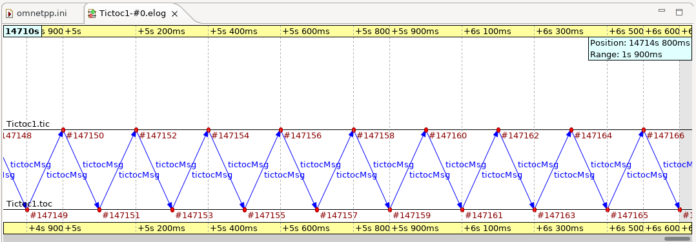
However, these log files can use up a lot of space, so it’s better to leave them off when they aren’t strictly needed:
You can continue reading the tic-toc tutorial to learn about
- improving the model display and console logging
- adding parameters
- using NED inheritance
- Adding delay to your messages
- Randomization
- Timeout and Retransmission
However, for now I think it’s worth moving ahead into INET
OMNeT++ Documentation
It’s always a great idea to read the docs!
Useful Links: How to create a simulation in OMNeT++
OMNeT++ is a generic discrete event simulator, which could be used to model any type of system. Thus, it does not have any built-in modules for common internet modules. We could code these ourselves, however this would be very time consuming. The INET Framework is a collection of modules for OMNeT++ which simulate wired, wireless and mobile networks. By using these modules, we don’t need to code them ourselves, and can quickly model real world network configurations.
In the provided VirtualBox, INET is already added to your workspace. Additionally, the application has been built, but only in the debug configuration, not the release configuration. If you are ever asked to switch to the release configuration, say no, unless you have >1 hour to spend rebuilding INET!
INET Documentation
The Documentation for INET is also quite good!
In the next section, we are going to use INET to build an Ethernet Network.
The Ethernet Network refers to devices connected to Layer 2 devices, i.e. hubs and bridges (switches), typically using Ethernet cable. These devices are all modelled for us in the INET framework, we just need to configure them as we would like.
- Recall that in layer 2, addressing is performed by MAC addresses.
- Hubs pass messages by simply flooding all devices, using the CSMA/CD algorithm to reduce collisions.
- A Switch instead learns which MAC Address(es) are connected to which ports, using ARP, so that packets may be forwarded specifically to the devices which need them.
INET Framework Documentation on the Ethernet
Let’s try to recreate the Tic-Toc application this time using INET modules.
Start with a new project, this time adding source and simulations folders:
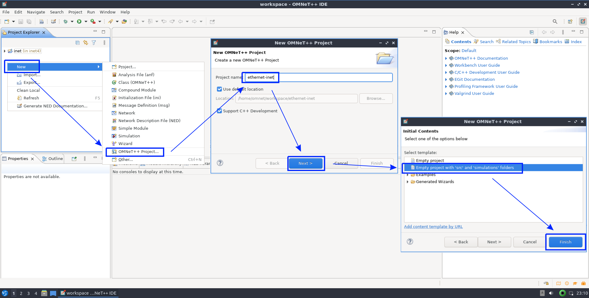
We need to add a reference to inet to use it as a dependency.
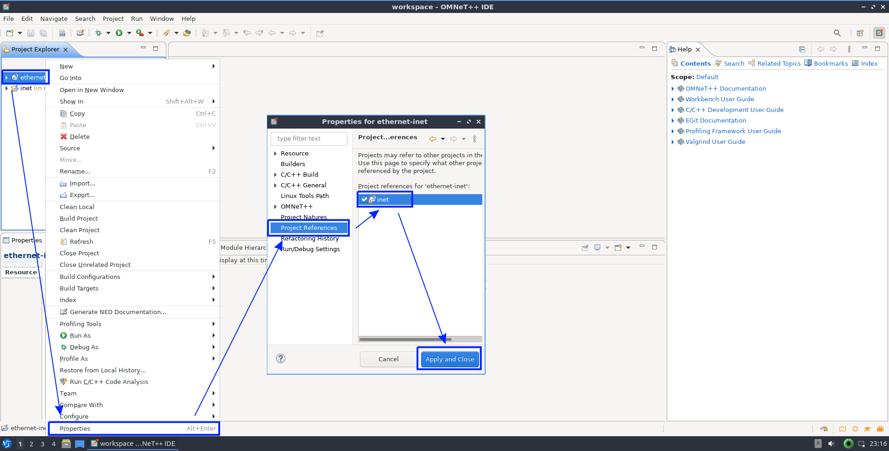
Note, using this configuration will add a package file. This is similar to Java packages, and keeps together your project.
In /ethernet-inet/simulations/package.ned
package ethernet_inet.simulations;
@license(LGPL);
Note that the package name mirrors the folder structure - unless the code is in the src folder:
in /ethernet-inet/src/package.ned
package ethernet_inet;
@license(LGPL);
So, lets create our ethtictoc.ned, and additionally place in a package declaration:
package ethernet_inet;
This time, let’s create our network using the Design Tab.
Start by adding a network:
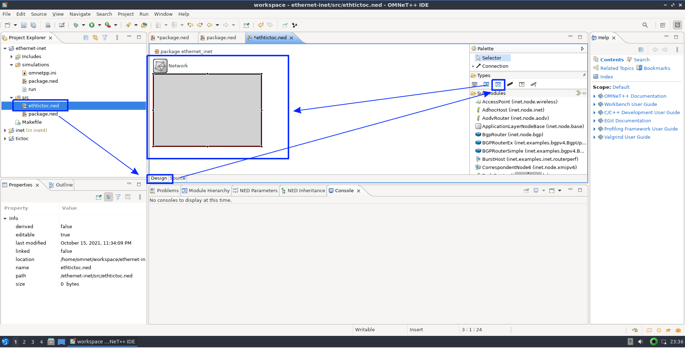
Let’s add two computers which are connected together directly. One will send packets forward over TCP and the other will respond to these packets. This is similar to our tic-toc configuration.
- Add two Standard Hosts
- Connect them together with Ethernet
- Add an IPv4Configurator, which auto-assigns IP’s, similar to DHCP
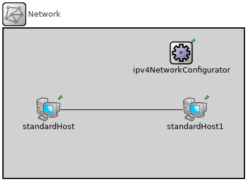
The Standard Host is a Compound Module. We can actually see all of the internals by double clicking on it:
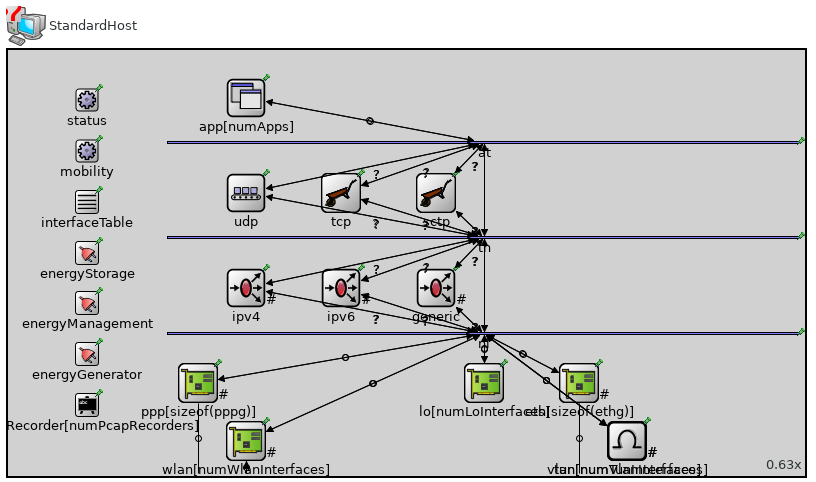
Some other compound nodes like this are:
- Ethernet Switch - A ethernet switch with a relay and a mac address for each port.
- Router - Contains common routing protocols
- IPV4 Configurator - Automatically assign IPv4 addresses for hosts and routers, similar to DHCP
Let’s rename our nodes so that they are a little easier to understand:
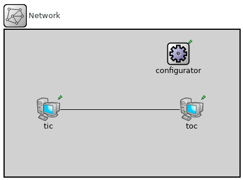
I found the default way that the code generated did not run nicely, so here’s some minor modifications:
in ethtictoc.ned
package ethernet_inet;
@license(LGPL);
package ethenet_inet;
import inet.networklayer.configurator.ipv4.Ipv4NetworkConfigurator;
import inet.node.ethernet.Eth100M;
import inet.node.inet.StandardHost;
network TicTocEthernet
{
@display("bgb=403,251");
submodules:
tic: StandardHost {
@display("p=75,136");
}
toc: StandardHost {
@display("p=321,136");
}
configurator: Ipv4NetworkConfigurator {
@display("p=298,41");
}
connections:
tic.ethg++ <--> Eth100M <--> toc.ethg++;
}
let’s also create our omnetpp.ini
[General]
network = TicTocEthernet
TicTocEthernet.tic.numApps = 1 # number of applications on clients
TicTocEthernet.tic.app[0].typename = "TcpSessionApp" # client application type
TicTocEthernet.tic.app[0].connectAddress = "toc" # destination address
TicTocEthernet.tic.app[0].connectPort = 1000 # destination port
TicTocEthernet.tic.app[0].sendBytes = 1MB # amount of data to send
TicTocEthernet.toc.numApps = 1 # number of applications on server
TicTocEthernet.toc.app[0].typename = "TcpEchoApp" # server application type
TicTocEthernet.toc.app[0].localPort = 1000 # TCP server listen port
This code tells tic to run one app, named TcpSessionApp Docs, to attempt to connect to a server named toc, on port 1000, and to send 1MB of data.
toc is also going to run one app, which is the TcpEchoApp Docs, which will echo back the same data to tic.
Once the entire process is complete, the simulation will end.
We can build and run this as a release to see the messages being exchanged. In particular, ARP requests, REQs, and data all send.
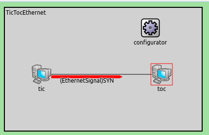
Address Resolution Protocol (ARP)
Recall layer 2 devices do not understand IP addresses, only MAC Addresses
- Thus, a layer 2 device has to know which interface each physical MAC address is connected to
- An ARP request is a special packet which is flooded through the networking, asking for a response from the target device
- The Switch remembers the address which initiated the request, adding it to the ARP table
- If a packet arrives at a device which is not the target, it is ignored
- If the packet arrives at the destination, a response is issued
- The response propagates back through the network in the reverse order.
- We no longer need to flood, we remember our reverse order
- The devices remember the location of the return response, updating the ARP table
- The response propagates back through the network in the reverse order.
- Once the entire response is returned, the intermediate devices have learned the pathway to
Tic-toc with UDP
Let’s make an iterative change to our system and use UDP rather than TCP.
- UDP is a connectionless protocol
We will this time use the UdpBasicApp Docs and UdpEchoApp Docs
update your omnetpp.ini to:
[General]
network = TicTocEthernet
TicTocEthernet.tic.numApps = 1 # number of applications on client
TicTocEthernet.tic.app[0].typename = "UdpBasicApp" # client application type
TicTocEthernet.tic.app[0].destAddresses = "toc" # destination address
TicTocEthernet.tic.app[0].destPort = 1000 # destination port
TicTocEthernet.tic.app[0].messageLength = 1024B # amount of data to send
TicTocEthernet.tic.app[0].sendInterval = exponential(100ms) #randomly send data packets about 10/second
TicTocEthernet.tic.app[0].stopTime = 100s #run our simulation for 100s
TicTocEthernet.toc.numApps = 1 # number of applications on server
TicTocEthernet.toc.app[0].typename = "UdpEchoApp" # server application type
TicTocEthernet.toc.app[0].localPort = 1000 # UDP server listen port
This will randomly send about 10 packets per second, and run for 100 seconds.
Do we need to update our ethtictoc.ned? No, because nothing has changed in the physical configuration of our nodes.
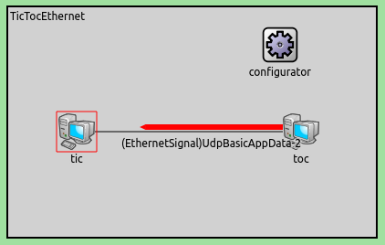
After your simulation is complete, a new folder is generated in src/results.
In this folder are your results.
.sca files hold scalar statistics and .vec hold vector statistics, which aggregate values over time. Double click on any of these and create a new General.anf file to analyze your results. In here you can click around and look at your collected data.
Let’s look at vector data -> throughput.
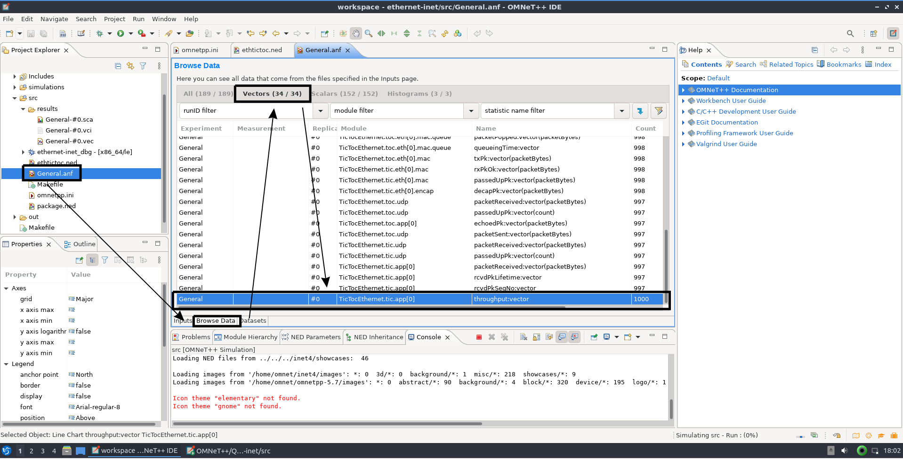
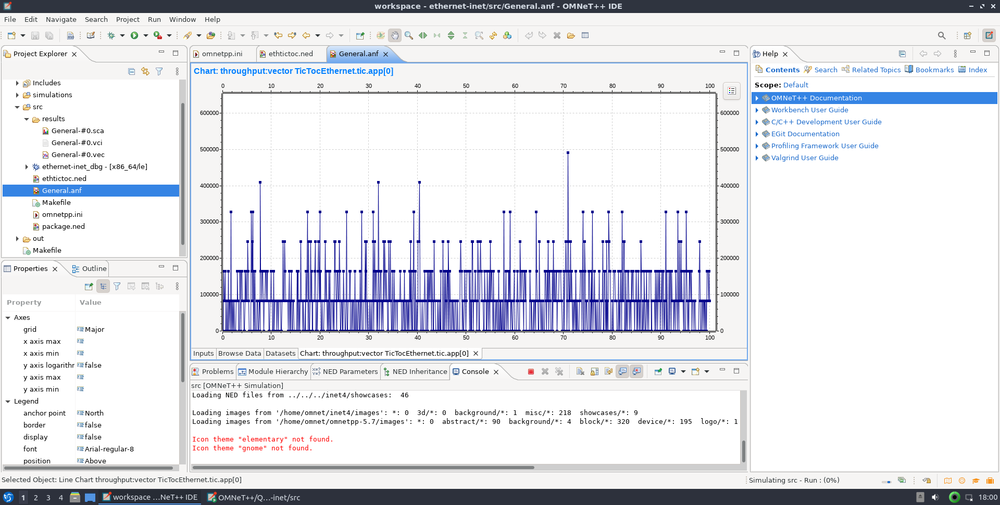
Why is it throughput bounces up and down? Think about how we sent our packets.
There are many ways to export this data for use in other applications.
Let’s expand what we have so far to create a full bus topology. We will dynamically create 10 clients and connect each to a bus:
Create a new OMNeT++ project ethernet-bus. Link in INET. Create ethernetbusnetwork.ned and omnetpp.ini.
In ethernetbusnetwork.ned:
package ethernet_bus;
import inet.networklayer.configurator.ipv4.Ipv4NetworkConfigurator;
import inet.node.ethernet.Eth100M;
import inet.node.inet.StandardHost;
import inet.node.inet.Router;
import inet.linklayer.ethernet.EtherBus;
network EthernetBusNetwork
{
parameters:
int numClients; // number of clients in the network
submodules:
configurator: Ipv4NetworkConfigurator; // network autoconfiguration
server: StandardHost; // predefined standard host
router: Router; // predefined router
bus: EtherBus; // predefined ethernet switch
client[numClients]: StandardHost;
connections: // network level connections
router.pppg++ <--> Eth100M <--> server.pppg++; // PPP
bus.ethg++ <--> Eth100M <--> router.ethg++; // bidirectional ethernet
for i=0..numClients-1 {
client[i].ethg++ <--> Eth100M <--> bus.ethg++; // ethernet
}
}
In omentpp.ini:
[Config BusTopology]
network = EthernetBusNetwork
*.numClients = 10 # number of clients in network
*.client[*].numApps = 1 # number of applications on client
*.client[*].app[0].typename = "UdpBasicApp" # client application type
*.client[*].app[0].destAddresses = "server" # destination address
*.client[*].app[0].destPort = 1000 # destination port
*.client[*].app[0].messageLength = 1024B # amount of data to send
*.client[*].app[0].sendInterval = 100ms #randomly send data packets about 10/second
*.client[*].app[0].stopTime = 100s #run our simulation for 100s
*.bus.positions = "5" #distance in m between each client and the bus
*.server.numApps = 1 # number of applications on server
*.server.app[0].typename = "UdpEchoApp" # server application type
*.server.app[0].localPort = 1000 # UDP server listen port
# enable csma / cd
**.eth[*].csmacdSupport = true
**.eth[*].mac.duplexMode = false
Major changes from before is that we are using wildcard matching (*), and we removed our random exponential sends.
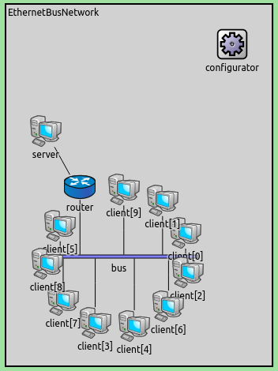
Recall that a Bus network is essentially a number of ethernet cables spliced together into a bus using cable taps. They share a physical medium. This is classic ethernet.
What do we see when we simulate it? So many JAM signals…
- Despite this, do we still get through all our packets?
- Can we detect how many collisions ocurred using our data viewer?
- If we change back to our random exponential sends, then how many collisions occur?
-
Using our lab example as a starting point, individually implement:
- The Star Topology
- This topology has all of the devices connected to a Ethernet Switch
- You will also need the server connected, through a router
- You can leave the simulation settings in
omnetpp.inithe same, or modify them if needed - You may want to look at the EtherSwitch
- For example, does this node use the
positionsparameter?
- For example, does this node use the
- The Ring Topology
- This topology has each computer connected to a Switch, and the switches connected around in a loop
- Typically this loop is one directional, but it will be easier for us to model it bidirectional
- Try to implement this as a parametric model using loops, but if you cannot it, it’s okay to hard code it with a set number of nodes
- You may get a
broadcast stormattempting to resolve ARP on this network. You can skip the ARP step altogether with:
- This topology has each computer connected to a Switch, and the switches connected around in a loop
in your omnetpp.ini:
**.ipv4.arp.typename = "GlobalArp"
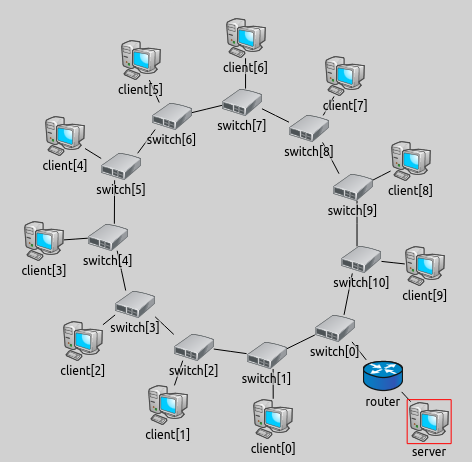
-
Rerun the Simulation for each topology, and browse the data.
-
Finally, write a 1 to 2-page report which attempts to answer three (3) research questions either within or between the topologies we studied
- You must formulate the hypothesis / research questions
- You must create and run a simulation to verify your hypothesis
- Provide answers based on your observations
- Back up your observations with data and graphs as appropriate!
- e.g. If I switch from a bus to a switch topology, I believe my throughput will…
Hints and Tricks:
- Note: You can add multiple networks in a single ned file, and as well multiple configurations in an
omnetpp.ini. The syntax looks like: In thenedfile:
network EthernetStarNetwork
{
parameters:
// etc.
}
network EthernetRingNetwork
{
parameters:
// etc.
}
in omnetpp.ini:
[Config StarTopology]
network = EthernetStarNetwork
# etc.
[Config RingTopology]
network = EthernetRingNetwork
# etc.
-
When you run it, you will need to select from the available configurations
- When looking for research questions you could…
- Try comparing networks with and without CSMA/CD (Half Duplex vs Full Duplex)
- Try comparing networks where hosts act at the same time vs staggered using the exponential random function.
- Try networks at different scales (4 nodes vs 10 nodes)
- Which parameters should I look at?
- Consider looking for throughput, collisions, received packet lifetime,
- Try removing the
*.numClients = 10line fromomnetpp.ini, and rerun your simulation. What happens?
Submission
- Please submit the source files for each of your topologies, and you report.
FAQ
- I accidentally switched to release…
- You could…
- Wait out the build time, I guess.
- I couldn’t figure out how to interrupt and switch back without the original build attempting to complete.
- On the plus side, once inet release is built, you shouldn’t have to build it again.
- Wait out the build time, I guess.
- Or you could…
- Save your work back out of the virtual box, restore the working state from the download, and copy your work back in.
- Sounds dumb. Might save your life if it’s minutes before submission time!
- You could…
- I get the error
imported NED not found.- Have you properly referenced in INET?
References:
A. Sekercioglu et. al. Tic Toc Tutorial. OpenSim Ltd. [Online].
INET User Guide. Networks OpenSim Ltd. [Online].
J. Skiles. Getting started with OMNET++, INET, Veins, and SUMO. YouTube.com. May 26, 2020. [Online].
J. Skiles. How To Set Up OMNet++ in Ubuntu 20+. YouTube.com. January 10, 2021. [Online].
J. Skiles. An Overview of OMNET++. YouTube.com. June 21, 2020. [Online].
B. Ricks. OMNeT++ and INET Tutorial Slides. Carnegie-Melon University. 2014. [Online].